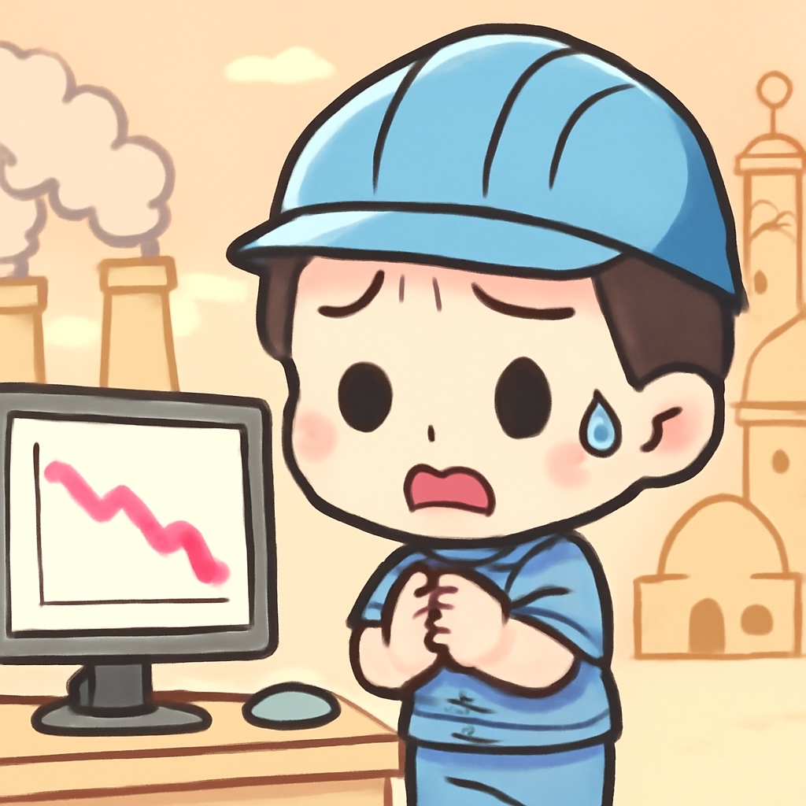
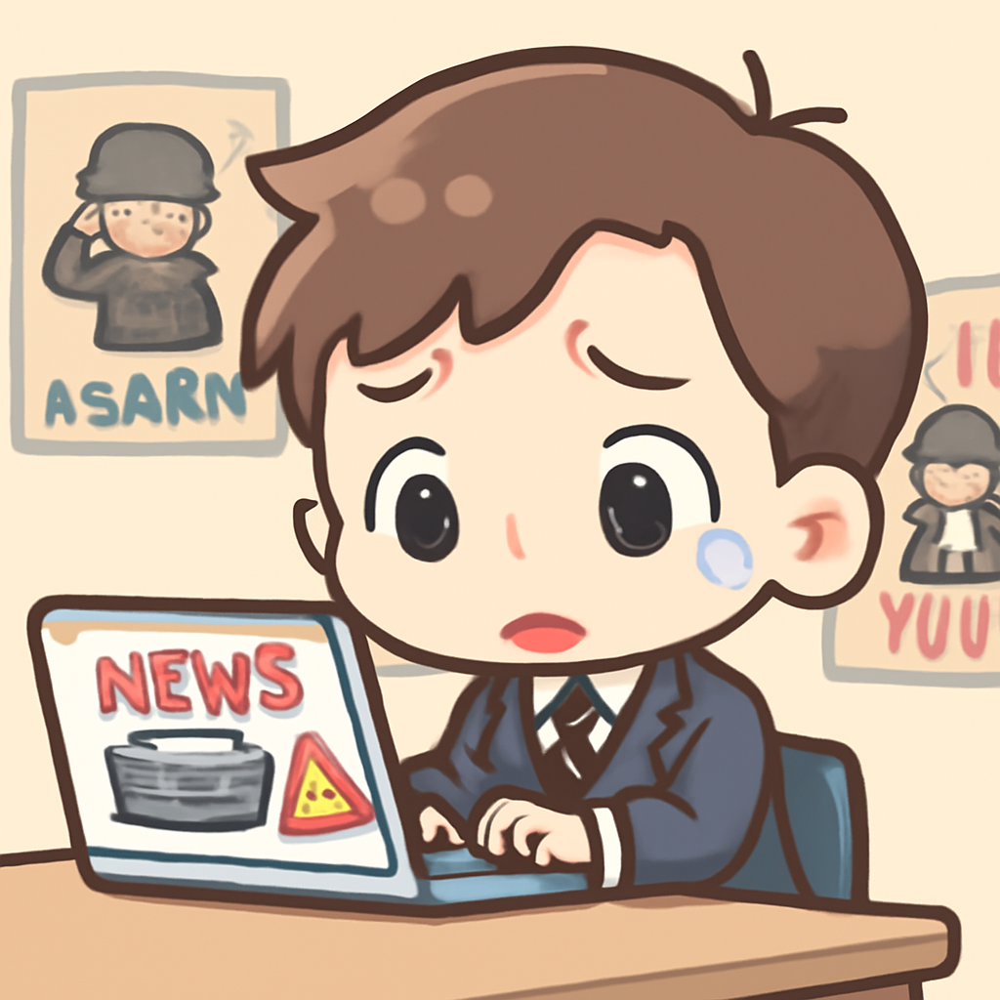
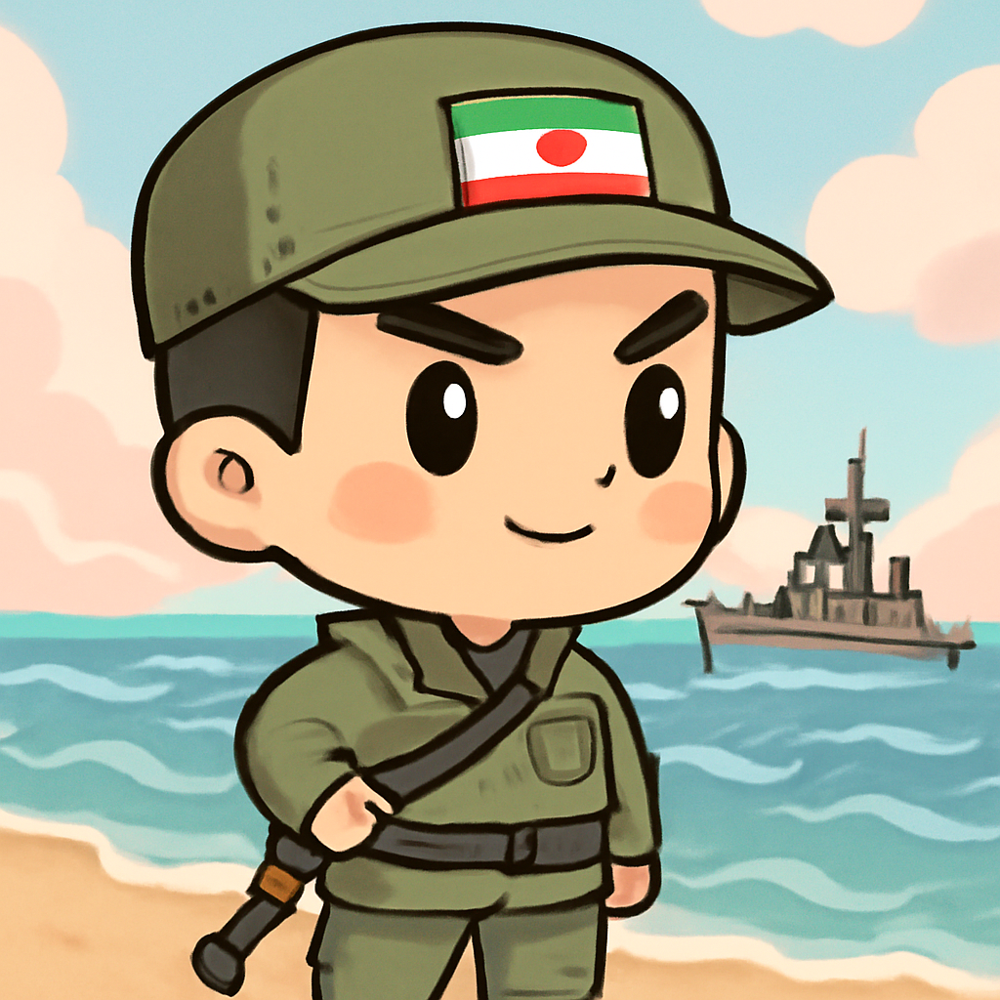

其一 · 中國 · 中東戰爭影響出口經濟
中東衝突對中國出口經濟造成壓力

在中國，由於中東衝突的影響，工廠訂單、成本和就業情況受到壓力。這不僅影響了經濟增長，還可能影響全球供應鏈，讓許多企業開始緊張兮兮的計算成本。看來不止是中東的火焰燒到中國的經濟了。
🔗 原始新聞 ↗
2026-04-23 · 以古觀今，以笑抗愁
中東衝突對中國出口經濟造成壓力

在中國，由於中東衝突的影響，工廠訂單、成本和就業情況受到壓力。這不僅影響了經濟增長，還可能影響全球供應鏈，讓許多企業開始緊張兮兮的計算成本。看來不止是中東的火焰燒到中國的經濟了。
🔗 原始新聞 ↗
黎巴嫩指控以色列在空襲中襲擊救援車輛
在黎巴嫩，總理指控以色列空襲中故意襲擊紅十字會的救援車輛，導致救援人員無法抵達現場，這一指控引發了國際社會的廣泛關注。戰爭的殘酷不僅是炮火，還包括對生命的漠視，實在讓人心痛。
🔗 原始新聞 ↗
美國海軍部長約翰·菲蘭立即離職

美國海軍部長約翰·菲蘭的突然離職引發了外界的猜測，這是近期美國軍事高層變動的一部分。這樣的變動可能影響美國的海軍戰略，尤其是在當前全球局勢不穩的情況下。看來美國的軍事界也不乏驚喜。
🔗 原始新聞 ↗
歐盟批准對烏克蘭的90億歐元貸款
烏克蘭獲得了歐盟批准的90億歐元貸款，這將有助於該國在戰爭中保持經濟穩定。隨著杜魯芝巴管道的重新啟用，這筆資金的到位顯得尤為重要，讓烏克蘭在國際舞台上再度展現活力。希望這筆錢能讓他們的經濟像油管一樣流暢。
🔗 原始新聞 ↗
伊朗革命衛隊在霍爾木茲海峽扣押兩艘船

在霍爾木茲海峽，伊朗革命衛隊宣稱扣押了兩艘船隻，這一行為增加了國際緊張局勢。面對這樣的挑釁，國際社會的反應將如何影響未來的和平談判仍是一個未知數。看來海上冒險又要開始了，不過這次可不是遊戲。
🔗 原始新聞 ↗